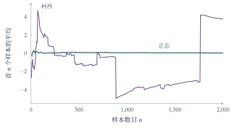

STEP III 1995，第 12 题
继续之前，请先阅读题目（原题为英文）。题目载于 STEP Support Programme 的题目资料库： step.maths.org/questions/95-s3-q12
引子
把许多次量度的结果取平均，随机误差便会互相抵消：平均值会稳定下来，趋向真实的数值。这条大数定律（law of large numbers）是整个统计学的基石。但它暗藏一个假设：这些量度必须有有限的平均值（mean）。本题构造了一个再自然不过的随机变量（random variable），即两个独立（independent）标准正态（standard normal）变量之比，而它根本没有平均值。它的平均永远不会稳定下来；事实上，一百万个这样的变量的平均，其分布与单独一个的分布完全相同。
这就是柯西分布（Cauchy distribution）。它的密度（density）看来像一个人畜无害的钟形，但它的尾部实在太厚，偶然出现的极大数值足以左右任何平均。本题用一个漂亮的几何论证把它找出来：两个坐标之比就是一条直线的斜率，而径向对称令这条直线的角度呈均匀分布。
动笔之前
若 \((U, V)\) 是一个随机点，其密度只取决于它与原点的距离，那么由原点到该点的直线与坐标轴所成的角 \(\Theta\)，你能说些甚么？
把平面旋转并不会改变密度，所以每个方向的可能性都相同：角 \(\Theta\) 在 \([0, 2\pi)\) 上呈均匀（uniform）分布。而 \(\frac UV\) 只取决于方向，与距离无关。
逐步解题
阶段 1 联合密度（joint density）
由于 \(X\) 与 \(Y\) 独立，它们的联合密度就是各自密度的乘积： \[\mathrm{f}(x, y) = \frac{1}{\sqrt{2\pi}}e^{-x^2/2}\cdot\frac{1}{\sqrt{2\pi}}e^{-y^2/2} = \frac{1}{2\pi}e^{-\frac12(x^2 + y^2)}.\] 它只通过 \(x^2 + y^2\)（即与原点距离的平方）取决于 \(x\) 和 \(y\)：在以原点为圆心的圆上，密度是常数。这就是“径向对称”（radially symmetrical）的意思。
阶段 2 运用对称性
\(\frac UV < k\) 可以在两种情况下发生，视乎 \(V\) 的正负号而定。这两种情况与旋转 \(180^\circ\) 的变换 \((u, v) \mapsto (-u, -v)\) 有甚么关系？
\(\frac UV < k\) 的意思是：要么 \(V > 0\) 且 \(U < kV\)，要么 \(V < 0\) 且 \(U > kV\)。旋转 \((u, v) \mapsto (-u, -v)\) 把第一个区域映射到第二个区域上，并且保持密度不变。所以两者的概率相同，于是 \[\mathrm{P}\Bigl(\frac UV < k\Bigr) = 2\mathrm{P}(U < kV, V > 0). \qed\]
阶段 3 一个角
在以 \(u\) 为横轴、\(v\) 为纵轴的平面上，画出区域 \(\{V > 0, U < kV\}\)。它是一个顶点在原点的楔形。它的角度是多少？
区域 \(V > 0\) 是上半平面。通过原点的直线 \(u = kv\) 与正 \(v\) 轴所成的角为 \(\arctan k\)（当 \(k > 0\) 时偏向正 \(u\) 的一方）。上半平面中位于这条直线左方的部分，是一个角度为 \(\frac\pi2 + \arctan k\) 的楔形。根据径向对称，楔形的概率等于它的角度除以 \(2\pi\)，所以 \[\mathrm{P}\Bigl(\frac UV < k\Bigr) = 2\cdot\frac{\frac\pi2 + \arctan k}{2\pi} = \frac12 + \frac1\pi\arctan k.\] 对 \(k\) 求导，便得到密度 \[\mathrm{g}(k) = \frac{1}{\pi(1 + k^2)}. \qed\]
回顾
独立的正态变量具有径向对称性。两个正态密度的乘积只取决于距离。
比值即方向。\(\frac UV\) 只取决于该点的角度，而这个角度呈均匀分布。
楔形的概率。在径向对称之下，楔形的概率与它的角度成正比。
背后的数学
没有平均值
柯西分布的平均值本应是 \(\int_{-\infty}^\infty\frac{k}{\pi(1 + k^2)}\,\mathrm{d}k\)，但 \(\int_0^K\frac{k}{1 + k^2}\,\mathrm{d}k = \frac12\ln(1 + K^2) \to \infty\)：这个积分并不收敛（converge），所以平均值不存在。（对称性或会令人以为答案是 \(0\)，但正负两部分都是无穷大，而 \(\infty - \infty\) 并没有值。）方差（variance）同样是无穷大。
更糟的是，\(n\) 个独立柯西变量的平均仍然是柯西变量，而且分布完全相同。（其中一个看出这点的方法，是利用特征函数（characteristic function）\(\mathrm{E}(e^{itX}) = e^{-|t|}\)。）所以取平均完全无补于事：一百万次量度的平均，并不比单独一次可靠。图 12.22.1 显示了实际情况：正态样本的累计平均会稳定下来，而柯西样本的累计平均却永远东歪西倒，不时被偶然出现的极大数值撞得偏离原位。

柯西变量从何而来
拿一支电筒，朝一个均匀随机的方向照向一面墙：光点在墙上的位置便服从柯西分布。在物理学中，同一个密度称为劳仑兹分布（Lorentzian），用来描述谱线和共振峰的形状（比较 第 11.1 节）。在金融学中，像柯西分布这类厚尾（heavy-tailed）分布，会用来为偶尔出现的股灾建立模型，而正态模型往往严重低估这类事件。这对统计学是一个严肃的教训：建基于平均值和方差的方法，遇上厚尾数据便会失效，这时就需要稳健的方法，例如使用中位数（median）（柯西分布的中位数完全没有问题）。
这个分布在 1824 年由泊松（Siméon Denis Poisson）研究过，他注意到它违反大数定律。柯西（Augustin-Louis Cauchy）则在 1853 年与 Irénée-Jules Bienaymé 就最小二乘法（method of least squares）公开论战时遇上它：柯西用它来说明，当误差属于厚尾时，最小二乘法可以是一个很差的方法。这个分布最终冠上了柯西的名字，正是 Stephen Stigler 所称的“史蒂格勒命名定律”（Stigler’s law of eponymy）的一例：没有任何科学发现是以其最初发现者命名的。
思维技巧
使用平均值或方差之前，先确定定义它的积分是收敛的。对称性并不能令一个发散的积分变成零。
在大学里，可积性条件是概率论中每一条定理的一部分：大数定律需要有限的平均值，中心极限定理（central limit theorem）（第 12.24 节）需要有限的方差。当这些条件不成立时，柯西分布就是标准的反例。
延伸练习
电筒。一支电筒与一面长而直的墙相距 \(1\)，所指的方向与垂直线成角 \(\Theta\)，其中 \(\Theta\) 在 \((-\frac\pi2, \frac\pi2)\) 上呈均匀分布。证明光点的位置 \(\tan\Theta\) 服从柯西分布。
倒数。证明若 \(C\) 服从柯西分布，则 \(\frac1C\) 亦然。（提示：\(\frac UV\) 与 \(\frac VU\)。）
中位数行得通。证明柯西分布的中位数是 \(0\)，而它的四分位数（quartiles）是 \(\pm1\)。
半径与角度。设 \(X\)、\(Y\) 为独立的标准正态变量，通过转换成极坐标（polar coordinates），证明 \(R^2 = X^2 + Y^2\) 服从平均值为 \(2\) 的指数分布（exponential distribution），并且与角度独立。（这是用来产生正态随机数的 Box–Muller 方法的基础。）
延伸阅读
Geoffrey Grimmett & Dominic Welsh, Probability: An Introduction（Oxford University Press），论随机变量的变换。
Nassim Nicholas Taleb, The Black Swan（Penguin）。讲述厚尾现象及其重要性，适合一般读者。
Stephen Stigler, The History of Statistics（Harvard University Press）。书中记述了柯西与 Bienaymé 的论战。